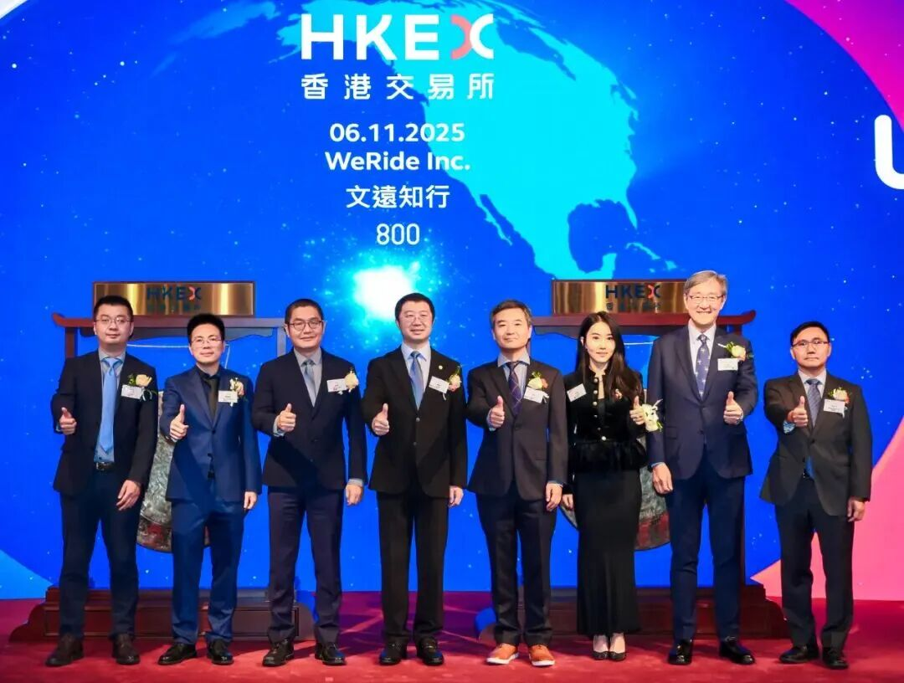

Pony.aiは、上海国際自動車産業展で第7世代自動運転システムを発表し、Toyota、BAIC、GACとのRobotaxiラインアップを初公開した。Pony.aiは大規模商用化を進める自律モビリティ企業であり、今回の発表は量産Robotaxiへ向けた重要な節目である。
第7世代自動運転システムは、100% automotive-gradeの自動運転キット（ADK）を備え、長い製品ライフサイクルと、乗客向けの安定性・安全性向上を提供する。継続的な設計最適化により、前世代と比べてBOMコストを合計70%削減した。内訳として、自動運転計算ユニット（ADC）は80%削減、ソリッドステートLiDARは68%削減されている。
モジュラーなプラットフォームアーキテクチャにより、3つのRobotaxiモデルからRobotruckサービスまで、複数の車両モデルへシームレスに適応できる。Pony.aiは、単一の技術基盤を複数用途へ展開することで、量産コストと統合リスクを下げる戦略を取っている。
第7世代Robotaxiラインアップは、2025年半ばから量産を目指す。Toyota、BAIC、GACという複数OEMとの提携により、Pony.aiはRobotaxiの商用展開を拡大する。自動運転開発の観点では、センサー・計算ユニット削減を明示した量産設計であり、L4のコスト構造を理解するうえで重要な事例である。